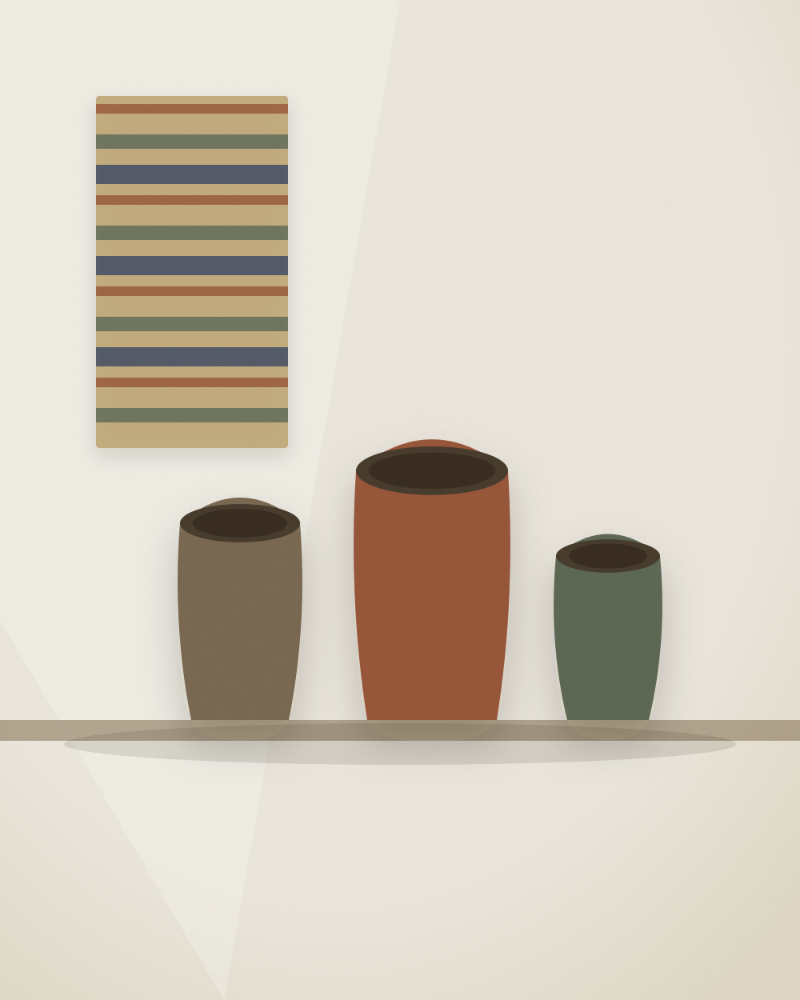
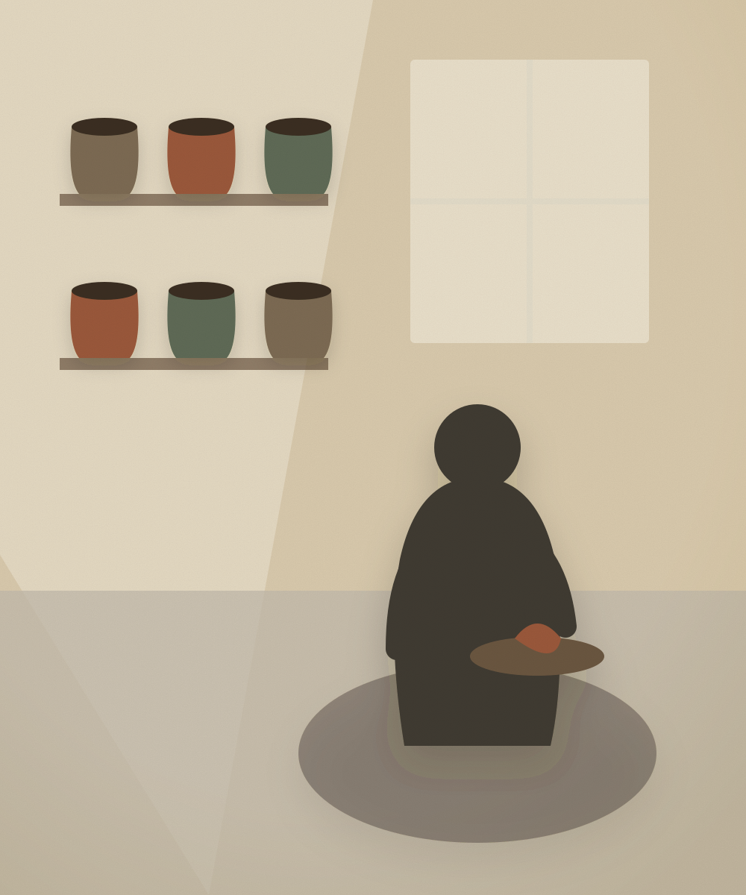
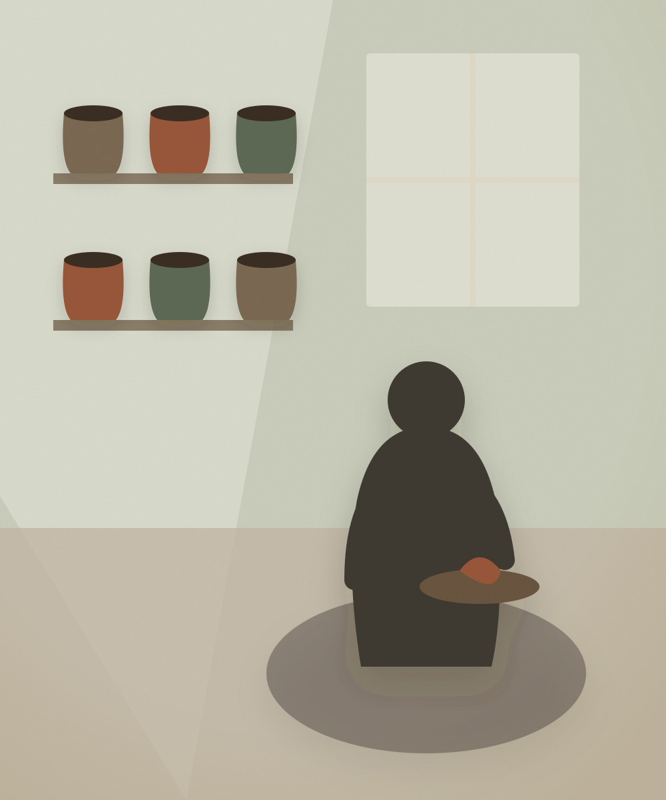
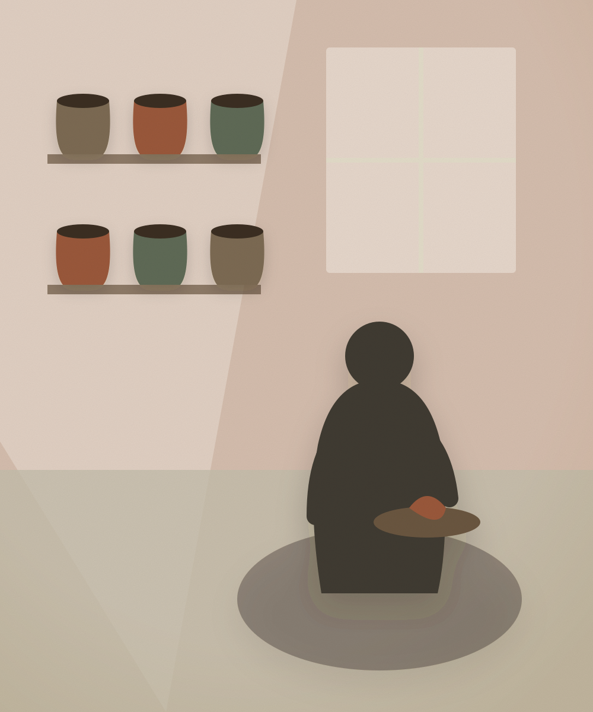

Every object has an origin. Here it is kept.
Provenance is a curated gallery of authentic cultural craft — each piece tied to a maker you can name, a technique you can watch, and a region that has been verified. A deliberate answer to the counterfeit culture that floods the market and undercuts real artisans.

On view now
A small, changing hang — never an endless feed. Six pieces chosen for the room they make together, refreshed each Monday.
Newly discovered artisans
Makers who have just joined, shown apart from the main selection so their work is seen before it has ratings. Five at a time, rotating.

Proof, not performance
Three markers can sit beside a piece: process video verified, cooperative endorsed, and region of origin verified. They are small on purpose. Authenticity should read as a watermark, not a billboard.
No piece is listed without a named maker and a documented technique. Nothing here is drop-shipped, white-labelled, or "inspired by".
How verification works
No single maker can flood the room
What we surface is driven by completed purchases and private 10-star craftsmanship scores — not views, not engagement. Any one piece rotates for at most 500 sales a day, or 50 high-rated feed placements, whichever comes first. Then other artisans are surfaced in its place.
New makers sit in their own rotation — with a guaranteed 1,000 feed impressions — until they have earned enough ratings to stand in the main selection. Visibility is shared by design.
See the cap in the interface
A vertical feed, without the noise
Full-screen process films, 15 to 60 seconds, on technique alone. Ambient studio audio — no music, no voiceover, no fast cuts. No view counts, likes, comments or followers anywhere in it. A quiet glass card carries the maker, the region, the price, and a single Acquire Piece button.
It is bounded, not endless. When today's films run out, the feed simply ends.
Open AURA StudiosBring your craft, keep your name on it
Present your work as a static listing with a process video, a short-form clip in the AURA Studios feed, or a scheduled live studio broadcast — all in the same calm, editorial frame. No algorithm to chase. No race to the bottom.
Ways to present your work